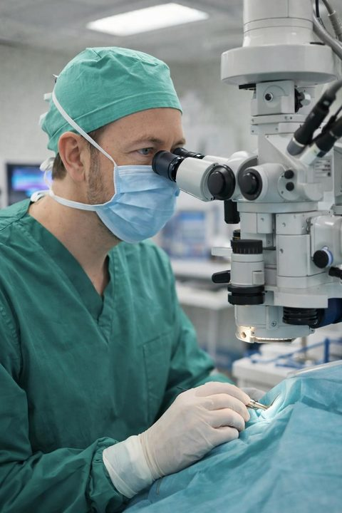

Mistä haet apua?
Kolme yleisintä syytä, miksi potilaat hakeutuvat vastaanotolle. Jokaisesta pääsee tarkempaan tietoon.
Onko näkösi muuttunut sameaksi?
Kaihi samentaa silmän mykiötä vähitellen, ja näkö voi tuntua utuiselta tai häikäisylle herkältä. Arvi-Matti tekee kaihi- ja linssileikkauksia, myös palvelusetelillä.
Lue kaihista ja kaihileikkauksesta →
Haluaisitko nähdä tarkemmin ilman silmälaseja?
Näönkorjausleikkaukset — SMILE, FemtoLASIK, PRK ja ICL — voivat vähentää riippuvuutta silmälaseista. Arvi-Matti valitsee menetelmän aina tilanteen mukaan.
Lue näönkorjauksesta →Onko sinulla todettu glaukooma?
Glaukooma vaatii säännöllistä seurantaa ja oikea-aikaista hoitoa. Arvi-Matti on tehnyt myös tutkimusta glaukoomakirurgiasta HYKS:ssä.
Lue glaukoomasta →
Miksi valita Arvi-Matti?
Kokemus ja erityisosaaminen näkyvät potilaalle käytännössä — ei vain paperilla.
Lääketieteen ja kirurgian tohtori
Tutkimustausta tarkoittaa, että hoitopäätökset perustuvat perusteelliseen ymmärrykseen silmän rakenteesta ja toiminnasta.
Silmäkirurgian erityispätevyys, EBOD-diplomi
Euroopan silmälääkäriliiton hyväksymä diplomi osoittaa, että osaaminen on arvioitu kansainvälisten standardien mukaan.
Vuodet HYKS Silmäklinikalla
Yliopistosairaalassa hoidetaan myös vaikeampia ja harvinaisempia silmäsairauksia — sieltä saatu kokemus tukee arjen vastaanottotyötä.
Monipuolinen lääketieteellinen tausta
Tausta yleislääketieteessä, sisätaudeissa ja radiologiassa auttaa näkemään potilaan kokonaisuutena, ei vain yhtenä silmän osana.
Mutkien kautta löytynyt tasapaino
Tie silmälääkäriksi ei ollut suora: ensin pitkä ura yleislääkärinä, sisätaudeilla ja radiologialla, ennen kuin tutkimustyössä huomattu käden taito vei kohti kirurgiaa.
“Tutkimustyötä tehdessäni huomasin olevani kätevä käsistäni ja leikkaavani laboratorion parhaat jääleikkeet kudospaloista mikroskoopilla tutkittavaksi.”
Vuonna 2010 hän siirtyi opiskelemaan silmätauteja, ja erikoistumisen jälkeen hän työskenteli pitkään HYKS Silmäklinikalla, muun muassa erikoislääkärin tehtävissä, tutkien samalla glaukoomakirurgiaa.
“Silmäkirurgina työskentelyyn liittyy sopiva pieni jännitys, joka pitää aistit hereillä. Vastaanottotyö on rutiininomaisempaa, mutta optiikka on tosi mielenkiintoista ja silmän rakenteen kauneus lumoaa aina.”
Vuodesta 2018 hän on työskennellyt Silmäasemalla. Vapaa-ajallaan hänet löytää useimmiten tyttäriensä kanssa, tenniskentältä tai kuntosalilta.
Työskentelytapa
Työskentelytapa“Parasta tyydytystä saan asiakaskohtaamisista — siitä, että pystyn oikeasti kohtaamaan ihmisen: ymmärtämään, miksi hän on tullut silmälääkäriin, ja auttamaan häntä näkemään paremmin.”Arvi-Matti Kuusniemi
Potilaan tietopankki
Tietopankki on rakenteilla. Ensimmäiset aiheet löytyvät jo alla, ja tarkempi lääketieteellinen sisältö julkaistaan sitä mukaa kuin Arvi-Matti on sen hyväksynyt.
Potilaiden kokemuksia
Täyden kympin arvoinen kokemus! Aivan ihana henkilökunta, hoitajat ja silmäkirurgi.
Asiakaspalvelu ja sujuva asiointi, ammattitaitoiset henkilöt ja loistava lopputulos.
Lähde: Arvi-Matti Kuusniemen asiantuntijaprofiili, Silmäasema.
Mistä minut tavoittaa
Ajanvaraus ja asiakaspalvelu Silmäaseman kautta. Kielet: FI · SV · EN.